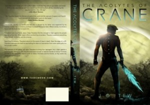

From the journal
"The Acolytes of Crane" (Book that I Edited) on Sale This Weekend on iPad!
From the original website · 2014-02-08
The super, exciting coming-of-age story "The Acolytes of Crane" is now available this weekend for FREE on iPad only! See this link: http://www.lulu.com/spotlight/J_D_TEW
Theodore Crane is your average 12-year-old boy... who unfortunately has an abusive father and a compliant mother. When he finally stands up to them, and is sent off to live with his loving grandparents, his life takes a turn for the wonderfully weird and strange. You see, a mysterious amulet - with cryptic message - floats in his bedroom. He's left to ponder this message. He soon learns it's a message from outer space, where he's called upon to mobilize a ragtag group against a dark and powerful warlord.
Don't delay, get your e-book FREE today on your iPad!
If you're reading this past the expiry date, just go to: http://www.amazon.com/Acolytes-Crane-J-D-Tew-ebook/dp/B00DQBZQFO
Theodore Crane is your average 12-year-old boy... who unfortunately has an abusive father and a compliant mother. When he finally stands up to them, and is sent off to live with his loving grandparents, his life takes a turn for the wonderfully weird and strange. You see, a mysterious amulet - with cryptic message - floats in his bedroom. He's left to ponder this message. He soon learns it's a message from outer space, where he's called upon to mobilize a ragtag group against a dark and powerful warlord.
Don't delay, get your e-book FREE today on your iPad!
If you're reading this past the expiry date, just go to: http://www.amazon.com/Acolytes-Crane-J-D-Tew-ebook/dp/B00DQBZQFO

